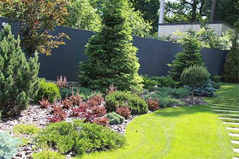
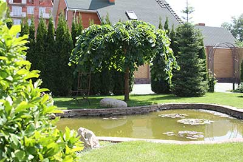

Landscaping
Planting greenery in Kiev and landscaping

For the company "Garden Magic" gardening the site is a core business, both in Kiev, Kiev region and throughout Ukraine. Our specialists and landscape designers have in-depth knowledge, backed up by vast experience in landscaping and landscaping of personal plots. Our customers always get more than expected!
What you really need is landscaping
Landscaping of the site is what makes your life, both in Kiev and in the country, truly fulfilling and happy. After all, only landscaping is able to endow a simple piece of land with soul. Plants and decorative compositions bring us closer to understanding the value of life in our own home. Only your own green lawn enables your child to play safely in the fresh air, and your favorite forms of plants will bring hosts closer to the ideal of their personal corner of nature.
At almost every step, the flora surrounds us, but only at home in the shade of our own tree we really rest, relax, stop from the eternal bustle of the city and perceive beauty in all its manifestations.
After all, each of us loves nature. Remembering the holiday, the branches of the mighty beauties of firs and firs cause us to feel airy when we watch the grasses swaying in the wind, the gentle blue shades of cheerful bells do not leave us indifferent, and how eagerly we breathe in the aromas of seasonal flowers - roses, acacia, jasmine, lilac, lily of the valley, lavender. ...
But with the help of landscape design and landscaping, we can bring all the most beloved and beautiful in nature to our site!
So, big mountains and we can turn into a small rocky garden in the form of a rock garden or rockery. We can inhale the smell of tar of magnificent pine trees and natural plantings even in our small garden, by planting a composition of decorative undersized varieties of conifers. A landscape architect can immortalize your memories of traveling to Japan or China next to your home in the form of a small Japanese-style garden. England’s ideal emerald lawns are also very easy to recreate in your yard. You can bewitchingly watch the murmur of a mountain river right next to your terrace, if you want to. The smells of lavender and rosemary, evergreen boxwood balls will remind you of Provence. The delicate tenderness of a birch grove will be recreated with just a few birches, if you trust the professionals who will successfully place them even on a small site.
To realize all this is possible thanks to the right thoughtful landscaping and landscaping of the site. It is important to emphasize separate areas in the garden. High-quality work of the landscape company "Garden Magic" in the person of landscape architects, designers and landscapers will bring balance and tranquility to your life. Even the most technically complex plans and crazy landscape ideas, if desired by the client, will turn into beautiful pictures of nature on your site, thanks to the experience and huge creative potential of our specialists.